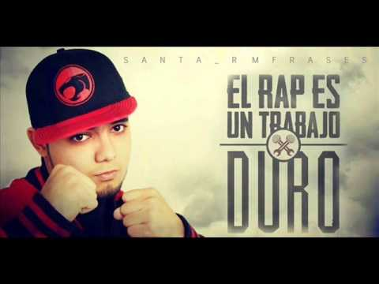

Christian Jiménez Bundó (2 de julio de 1988, Sarrià, Barcelona, España), más conocido por su nombre artístico «Porta», es un rapero español que interpreta música rap en castellano. Se hizo popular en 2006 a través de su enorme éxito en las redes sociales, con sus maquetas No es cuestión de edades (2006) y No hay truco (2007), que fueron ampliamente difundidas en Internet, donde rompió récord de descargas. Porta ganó una mayor popularidad al lanzar su primer álbum En boca de tantos en (2008) y así también dio a conocer mundialmente a su grupo Rap Comando. Su segundo álbum Trastorno bipolar fue lanzado en (2009) pero no tuvo el mismo éxito de ventas que su primer LP ya que no tuvo la misma promoción, debido al desinterés de la companía discográfica que lo promovía. Los dos álbumes fueron editados por la multinacional discográfica Universal Music Group.2 Con el tiempo las cosas entre Porta y su discográfica no coincidieron por falta de promoción por parte de la discográfica multinacional y Porta terminó renunciando a su contrato el 24 de agosto de 2011.
Sus últimos trabajos, Algo ha cambiado salió a la venta el 10 de junio de 2014, y Reset, salió a la venta el 7 de mayo de 2012 ambos bajo el sello de PIAS Spain.
RAP(MC)
CARTEL DE SANTA
l grupo se formó en 1996 cuando MC babo y otros integrantes subieron a cantar un rap improvisado. Se casó en el año 2001 Con Zuemy Aimee Rodriguez Moreno.El grupo se hizo famoso en 2002, cuando lanzaron su primer álbum "Cartel de Santa", llamado igual que el grupo. El álbum incluyó canciones que se convirtieron en éxitos, como: "Asesinos de Asesinos", "Super MC's", "La Pelotona", y "Todas Mueren Por Mí". Este álbum fue producido por Jason Roberts,3 quien también ha producido para artistas como: Milton G., Cypress Hill, Ice Cube, House of Pain, Control Machete y Plastilina Mosh. Esto contribuyó a la fama de la banda.Ese mismo año, Cartel de Santa, lanzó al aire un vídeo musical de la canción "Perros", que fue transmitido a América Latina por MTV.4
Sin embargo, el álbum más importante de su carrera fue lanzado un año después, en 2004, llamado Cartel de Santa Vol. II que incluía canciones como "Bla Bla Bla".
rap(mc)
SANTA RM
Christian Jesús Morales Rosas, mejor conocido como Santa RM (anteriormente conocido como Santa o en sus inicios conocido como Caballero MC) es un MC procedente de Nogales, México.
Su disco más reciente es "La Cara B" que lanzó junto con Kryz y tiene pendiente uno en solitario titulado "Mala Ortografía 2.0".
Sus principales influencias musicales son Santaflow y Nach, aunque también cabe mencionar otros como Kase O, Isusko, El Bezea, Eptos Uno, H Muda, Iluminatik, T Killa, Niño Problema, La Gesta, Ferran M.D.E, Crew de Cuervos, Caidos del Cielo, Danger, Ente, Flowcloricos, Syla, ToteKing, Juaninacka, Suko, Los Aldeanos, Arma blanca, Zpu, Falsa Alarma, Piezas, FK Crew, Ricardo Arjona, Alta Escuela, SBR, SFDK, Eminem, Shinoflow, Armada Del Submundo, Mago de Oz, Sistem OF a Down, Linkin Park y Notorious BIG.

RAP(MC)
C-KAN
C-kan, cuyo verdadero nombre es José Luís Maldonado Ramos, es un rapero tapatío que nació en Guadalajara, Jalisco, México, un 26 de julio de 1987. C-Kan surgió a la fama cuando comenzó a grabar videos musicales y subirlos a su canal de YouTube. Gracias a su esfuerzo, las redes sociales y páginas de música de la internet, ahora es uno de los artistas populares más influyentes del gangsta rap en México.C-Kan nació y creció en la colonia Cuauhtémoc de Guadalajara, en el barrio La Cancha 98, aunque ahora tiene su nuevo hogar en la colonia Santa Cecilia.A pesar de haber nacido de familia humilde y con muchos obstáculos, C-Kan ya venía con el cerebro programado para triunfar. A la edad de 12 años quedo huérfano de padre y es cuando comenzó a convivir con las pandillas de los alrededores de su casa.Esto es lo que C-Kan escribió sobre su infancia: “Yo me enredé con la calle desde morrito. Hoy consigo solo todo lo que necesito. Solo en el barrio entre convictos y conflictos. Adictos, finanzas, malandros y delitos (…) La mafia anda al cien. Y el negocio marcha bien”.
RAP(MC)
MENTE EN BLANCO KLAN
Adán Zapata nació el 20 de octubre de 1990 y vivió en el barrio de la México Lindo en San Nicolás de los Garza, Nuevo León. Desde niño creció en la delincuencia de los barrios bajos de San Nicolás de los Garza. Conoció el rap a la edad de 12 años. Comenzó su carrera artística a los 14 años, edad a la que ya componía y grababa sus primeras canciones.En 2006 conoce al grupo donde pasaría en resto de su vida: la Mente en Blanco. Ese mismo año sacan su primer disco con 53 canciones.En 2011, Adán en colaboración con el rapero Da Fucking Draw sacan un disco titulado "The North Side Kings" con canciones que se convirtieron en éxitos como "Enemigos", "Uno por uno", "El piensa y cree". Adán siempre resaltó por su estilo único.

RAP(MC)